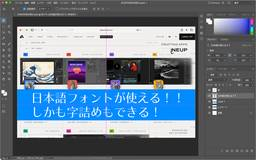
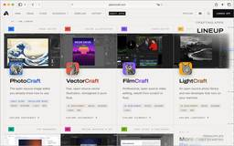
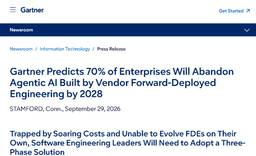
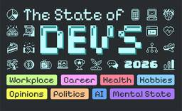
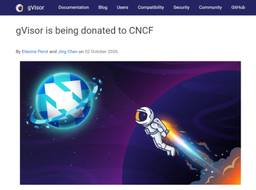
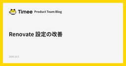

直近1週間の人気フィード
はてなブックマーク数を元に新着優先で並べ替え
これには驚いた！ 今度はExcelやWordやPower Pointをオープンソースで再構築、Win、Mac、Linux、Web対応で無料 247 コリス
247 コリス
今週はCrafting Appsの記事ばかりになっています。 Photoshopを再構築したオープンソース版「PhotoCraft」の日本語対応など、Adobeのアプリ7種類を毎日のようにアップデートしている中、なんとE […]
2日前

PhotoshopやIllustratorをオープンソースで再構築した「Crafting Apps」が日本語フォント、UIの日本語化に対応 413 コリス
10/5に紹介した、PhotoshopやIllustratorをオープンソースで再構築した「Crafting Apps」が早くも日本語フォント、UIの日本語化に対応した模様。 下記の画像はCrafting AppsのPh […]
3日前

何これ、すごすぎる！！ PhotoshopやIllustratorをオープンソースで再構築、しかもWin、Mac、Linux、Web対応で無料 1511 コリス
これには思わず二度見、いや三度見しました！ Photoshop, Illustrator, Premiere Pro, Lightroom, Acrobat Pro, After Effects, InDesignのAd […]
6日前

さくらインターネット、GPU専有によりトークン消費量を気にせず定額で利用できる「さくらのAI Engineプライベートエディション」提供開始を発表
179 Publickey
Publickey
さくらインターネットは、GPUサーバ上で基盤モデルを展開しマネージドサービスとして提供する「さくらのAI Engine」を、企業がGPUを専有して使える「さくらのAI Engine プライベートエディション」の提供開始を発表しました。 お知...
2日前

AI時代に、あえて「一人で全部」をやめる。SansanがPdMを5つの専門ロールに分ける理由 26 Sansan Tech Blog
Sansan Tech Blog
AIの発展によって、プロダクトマネジャー（以下PdM）が一人で担える仕事の範囲は広がっています。プロトタイプをつくり、コードを書き、顧客の声を整理し、Go-to-Marketまで考える。「これからは一人のPdMが、より多くを担う」。それがAI時代の定石に見えます。Sansanが選んだのは、一見するとその流れに逆行する戦略です。PdMに求める共通の基礎を定めた上で、役割を5つの専門領域に分け、それぞれの領域を強みとするメンバーを組み合わせてプロダクトを前に進める。万能な一人へ仕事を集約するのではなく、専門性を持つメンバーがチームで大きな成果を狙う組織へ移る挑戦を開始しました。今後も加速する技術の…
2日前

FDE（フォワードデプロイドエンジニアリング）によって開発されたAIエージェントの7割は使われず、FDEの名前で単なるコンサルティングが販売されるようになる危険が高まるとガートナーが予測 181 Publickey
米調査会社のガートナーは、ベンダーのFDE（フォワードデプロイドエンジニアあるいはフォワードデプロイドエンジニアリング）によって開発されたAIエージェントの70％が2028年までに企業に使われずに放棄されるだろう（Gartner Predi...
4日前

世界中のソフトウェア開発者の実態を調べた「State of Devs 2026」公開。何歳？ 年収は？ モニタは何枚？ AIにどのくらいコードを書かせている？ 趣味は？ など集計結果 105 Publickey
IT関連の各種調査を行っているプロジェクトDevographicsは、世界中のソフトウェア開発者の実態などをアンケートで調査した「State of Devs 2026」の結果を公開しました。 ここでは全体の結果から興味深いところをいくつか抜...
6日前

git worktree大増殖で困っていた 58 エムスリーテックブログ
Gitのworktreeサブコマンドは、AIエージェント開発が普及してから急によく知られるようになった感があります。実際にこれが登場したのはもう10年前、2016年のことだそうですね。私自身は業務の性質上、複数の依頼案件を並列で進めることが多くてAIエージェントが出てくる前からworktreeみたいなことをしていました。同じリポジトリを何個もローカルに別々にcloneしてあっちへ行ったりこっちへ来たりと作業していたんです。それで昨今の流行でworktreeサブコマンドの存在を知ったときには悔しいのなんの。 とはいえ、worktreeを使って（AIエージェントも使って）超多並列で開発業務をやって…
5日前

AWS、DuckDBをAurora PostgreSQLに統合。ETL不要で直接データレイクを読み取り可能にしたと発表 17 Publickey
Amazon Web Services（AWS）は、Amazon Aurora PostgreSQLにDuckDBを統合し、Apache Icebergなどで構築したデータレイクのデータを直接読み取って処理できるようになったことを発表しまし...
3日前
Supabase、1サーバあたり数百万ものSQLiteをホストする「Turso」買収を発表。AIエージェントで加速するDB需要に対応 58 Publickey
PostgreSQLをベースにしたデータベースサービス「Supabase」などを提供しているSupabaseは、SQLiteをベースとしたデータベースサービスを提供する「Turso」を買収したことを発表しました。 Turso is join...
6日前
SVGアイコンを探すときにこれは便利！ 無料で商用利用できるアイコンのライブラリを横断検索できる便利サイト -IconsDB 4 コリス
これまでたくさんのSVGアイコンのライブラリを紹介しましたが、それらのほとんどをひとまとめに閲覧・検索できる便利なサイトを紹介します。 複数のアイコンライブラリを横断検索してSVGアイコンをダウンロードでき、さらにはサイ […]
4日前

CoCo CLI Hackathon 2026 体験記 — Snowflake CoCoによるネットワーク運用レポート自動生成 4 NTT docomo Business Engineers' Blog
Snowflake主催の[CoCo CLI Hackathon 2026](https://hack2skill.com/event/cococlihack/)(APJ: アジア太平洋・日本地域)にチームcocomoとして参加し、Winner(優勝)を受賞しました。この記事では、約2ヶ月間のハッカソンを通じて何を考え、どう判断し、何を学んだかを体験記として紹介します。
5日前
アール・デコの美しい幾何学模様をデザインに取り入れた、CSSで実装されたボタン -Art Déco Buttons 4 コリス
アール・デコのモダンでおしゃれなデザインが好きな人は多いと思います。 アール・デコの左右対称の美しい幾何学模様をデザインに取り入れた、CSSで実装されたボタンを紹介します。 Art Deco Button Antholo […]
5日前

Google、サンドボックス型コンテナランタイムの「gVisor」をCNCFに寄贈したと発表 6 Publickey
Googleはサンドボックス型コンテナランタイムの「gVisor」をCloud Native Computing Foundation（CNCF）に寄贈したことを発表しました。 gVisorはコンテナ型仮想マシンの業界標準であるOCI（Op...
5日前

マイクロソフト、VS CodeにAIモデルのオーケストレーションで高品質低コストなAIを実現する「HydraFusion」をプレビュー実装 3 Publickey
マイクロソフトは9月30日付けでリリースされたVisual Studio Code 1.140（以下、VS Code）で、複数のAIベンダから提供されているAIモデルをオーケストレーションすることでより高品質で低コストを実現するという「Hy...
4日前
Cloudflare ContainersがAIエージェント向けに刷新。起動が6倍速、ファイルシステムのスナップショット機能など 4 Publickey
Cloudflareは、同社のエッジロケーションでコンテナ型仮想マシンを実行可能にする「Cloudflare Containers」をAIエージェント向けに刷新したことを発表しました。 これまでよりも起動速度が6倍となり、環境構築が容易にな...
5日前

2026年度 情報セキュリティ部のインターンシップの様子を紹介します！ 4 NTT docomo Business Engineers' Blog
こんにちは、NTTドコモビジネス情報セキュリティ部です。 NTTドコモビジネスを含めたドコモグループでは今年も現場受け入れ型インターンシップを開催いたしました。 情報セキュリティ部でも5つのポストに対して8人のインターンシップ生に来ていただき、2週間にわたるプログラムに取り組んでいただきました！ インターンシップ生の目線で、ポスト紹介や体験した業務内容、振り返りをまとめてもらいました。 この記事では、それらをポストごとにご紹介します。 インターンシップ生目線のよりリアルな体験記を通して、次回以降に応募を検討される方の一助となれば幸いです。 【D1】CSIRTでのサイバー攻撃への対応実践と高度分…
6日前

Renovate 設定の改善 3 Timee Product Team Blog
こんにちは。タイミーのデータエンジニアリング部DSグループでMLOpsを担当しているYukitomoです。 前回の記事では、Python + uvのモノレポ環境において、Renovateを用いて依存関係更新のプルリクエストを制御するための基本設計を紹介しました。 その後、実際に運用してみると、Renovateの管理対象はPythonの依存パッケージだけでは収まりませんでした。devcontainer.jsonやCloud Runのマニフェストなどへ対象を広げるにつれて設定が複雑になり、Mend.io経由で動かして結果を待つだけでは、意図通りに動かない設定の原因を追いにくくなりました。 そこで今…
6日前